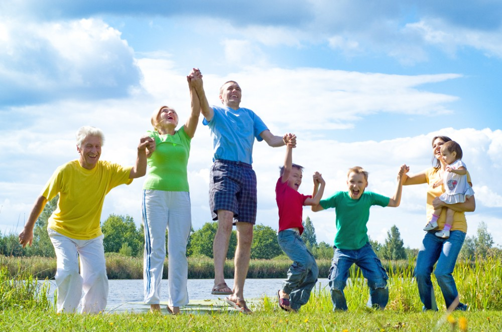

|
Здоровый образ жизни – комплексное понятие, включающее в себя множество составляющих. Сюда входят все сферы человеческого существования – начиная с питания и заканчивая эмоциональным настроем. Это способ жизнедеятельности, направленный на полное изменение прежних привычек, касающихся еды, режима физической активности и отдыха. Актуальность здорового образа жизни обусловлена возрастанием и изменением характера нагрузок на человеческий организм в связи с увеличением рисков техногенного и экологического характера, усложнением социальной структуры. В текущей ситуации забота о здоровье и самочувствии индивидуума связана с выживанием и сохранением человека как вида. Объяснить, что такое здоровый образ жизни (ЗОЖ) в нескольких словах невозможно. Согласно официальному определению, это образ жизни, направленный на укрепление здоровья и предупреждение заболеваний. Сторонники ЗОЖ как философско-социологического направления рассматривают данное понятие как глобальную проблему и составную часть общественной жизни. Имеются другие аспекты понятия ЗОЖ – психолого-педагогический, медико-биологический, однако резкого разграничения между ними нет, поскольку все они решают одну задачу – укрепление здоровья индивидуума.
Здоровый образ жизни – предпосылка и необходимое условие для: Интерес к данной теме возник сравнительно недавно (в 70-х годах XX века) и был связан с изменением образа жизни современного человека, увеличением продолжительности жизни, глобальным изменением среды обитания людей, возрастанием влияния экологических факторов на здоровье человека.
|
|---|
Сайт создан студентом ИПИТ для учебной практики. Группа БИС-16п, Ахматханов Хамзат Хож-Ахмедович.